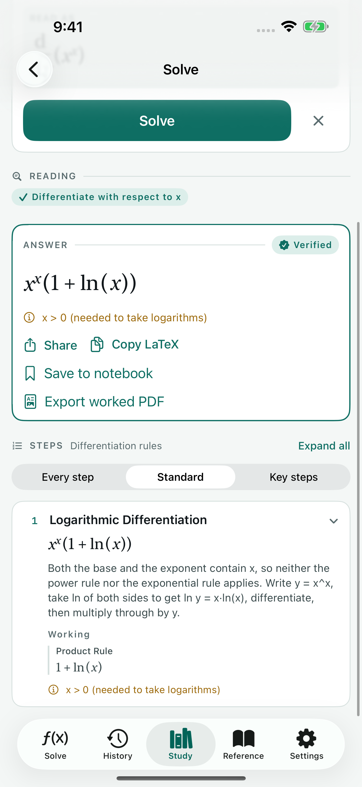
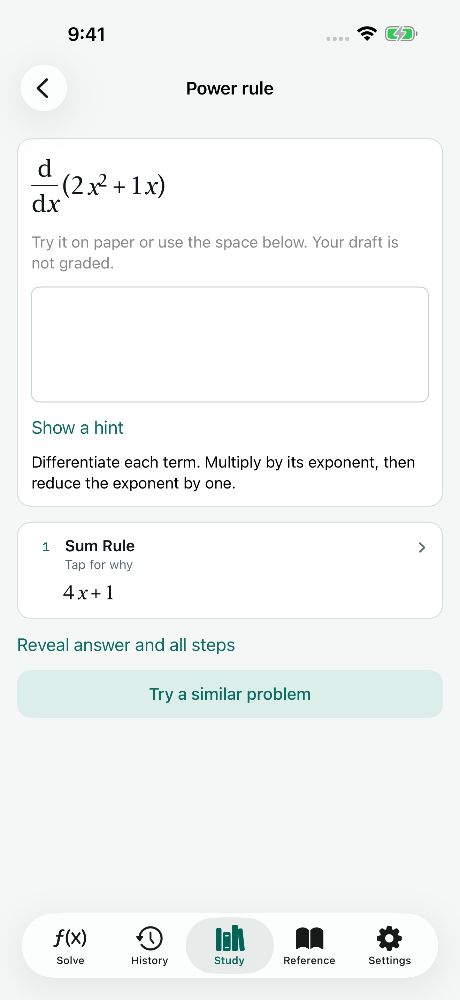
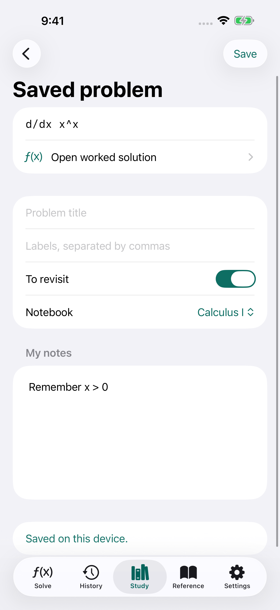

Build the problem you mean.
Enter calculus with guided fields and matrices with a grid. Check how Qedra reads your expression before you solve.
Work through calculus, algebra and matrices. Save the problems that matter, add your own notes, and practise again when it is time to revise.
Get Qedra on the App StoreUnlimited answers. Optional Pro study tools.

Enter calculus with guided fields and matrices with a grid. Check how Qedra reads your expression before you solve.
Read the named rule and explanation behind each step. See the assumptions and what a verification check could establish.
Save a problem by course, add labels and your own explanation, then mark it to revisit before an exam.

Each practice topic includes an example. Start with your own working, ask for a hint, and uncover the solution at your pace.
Pro adds more variations. Scratch work is not automatically graded.
A saved problem keeps its original notation and operation. Add what helped it click, find it with search, and open the worked solution again.
One course notebook is included. Pro adds more. Existing notebooks stay readable and editable if Pro ends. Notebooks are stored on this device.

Export a formatted PDF with the solution steps, assumptions and verification. Keep it with your course materials or share it for a study session.
Explore QedraUS prices are $2.99 monthly, $14.99 yearly or $49.99 once for lifetime access. The annual plan includes a 3-day free trial for eligible customers; monthly has no trial. Regional prices are shown in the app before purchase. Text sharing and copying answers as LaTeX remain available without Pro.
Calculations and your notebooks work on your device. Your problems and notes are not uploaded to a Qedra server. Purchases and the optional advertising services use a connection.
Unlimited answers, three full worked solutions per day, the latest 100 unpinned history entries (pinned work stays until you delete it), one course notebook and one practice example per topic. The free tier can show a banner on the Solve screen.
Camera input is not included. Use the mathematics keyboard, guided calculus fields or matrix grid, and confirm the preview before solving.
No. The engine supports defined families of mathematics. When it cannot solve or verify a problem, it explains the limitation. Read the assumptions and verification notes alongside the answer.
They stay on the device and may be included in its backups. There is no Qedra account or notebook sync. Export the solutions you want to share using Pro PDF export, or use text and LaTeX sharing.
Read the getting-started guide and purchase help, or contact mwsupplylimited@gmail.com. For a mathematical issue, include the exact expression, selected operation and notation settings so we can reproduce it.